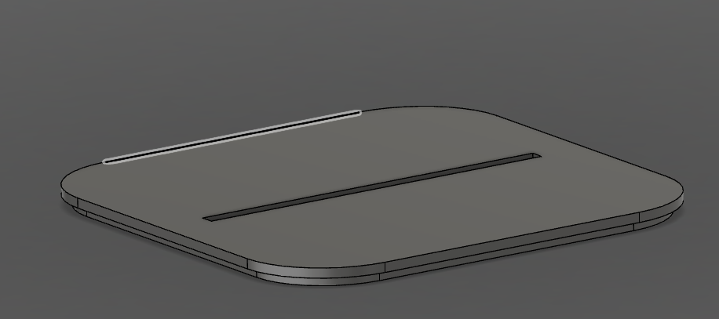
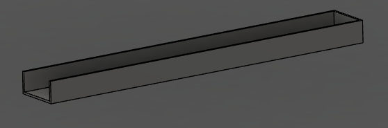
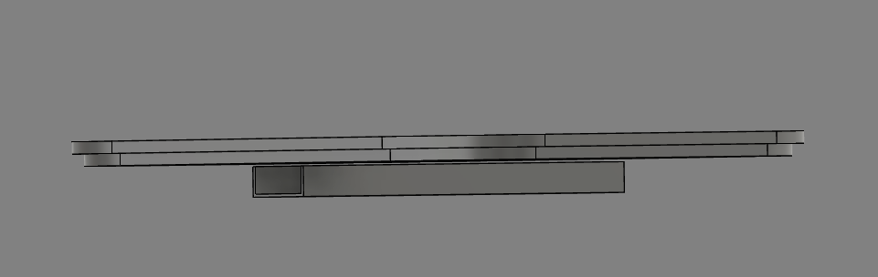

soph week 1/20 - 1/24
slightly shorter week due to mlk day, so i focused more on double checking everything rather than starting something new.
box design (completed?)
i started this week with creating the lid for my box, which utilizes friction-fit, eliminating the need to use screws to keep the aesthetics clean.
additionally, i designed a separate compartment to house my neopixel. i previously had the component connected with my lid, but that would lead to overhang when printing. by creating it as a new component, i will have to print them separately, and combine them together.
in order to connect the two parts, i plan to use glue. overall, the box looks pretty clean, with no screws and an easy way to fix the box if error’s were to occur.
i believe that at this point, i’m done with my lightbox. i will have to check wil mr.l about any potential errors before trying to print out the box. once confirmed, i will move onto creating my acrylic design, which will most likely feature a derpy pokemon design.
while finishing the box, a problem occured when making the lid, as the male headers on my pcb were too long and entering in the housing for the neopixel. to counteract this, i decided to scale my design by 0.75 instead of 0.5, leading to a slightly larger box.
i’m pretty happy with how the model is turning out, as cad isn’t my strong suit. there are some things that i don’t like, such as having a massive hole for power and not having the fan’s on the bottom of the mac mini, as i’m not sure how to make it, and not sure if it’s possible to print it.
to deal with the massive hole, me and my friend miles have discussed potentially using an auxiliary cable for power to make the design more realistic, and remove that massive hole for power.